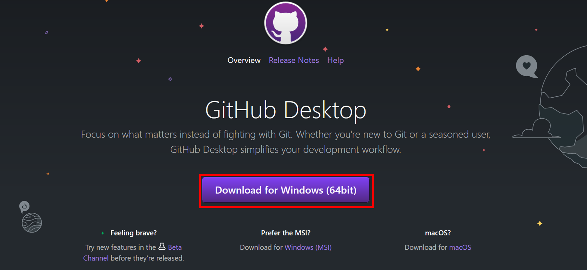

Appendix B — GitHub setup
B.1 Create a GitHub account
GitHub is a cloud-based hosting platform that lets you host and manage repositories for version control and collaboration.
To Create a GitHub account, follow the instructions that are given in slide 3 of the Powerpoint document available at the following link.
B.2 Install GitHub desktop
GitHub Desktop is an application that allows to interact with GitHub through a visual interface instead of using the command line (for software developers) or GitHub’s web browser.
You can install GitHub Desktop on supported Windows or macOS operating systems.
- Visit the download page for GitHub Desktop.
- Click Download for Windows.

- In your computer’s Downloads folder, double-click the GitHub Desktop setup file.
- Follow the instruction in the installation wizard to complete the installation.
To connect your GitHub account to GitHub Desktop, follow the instructions that are given in slides 6 to 9 of the Powerpoint document available at the following link.